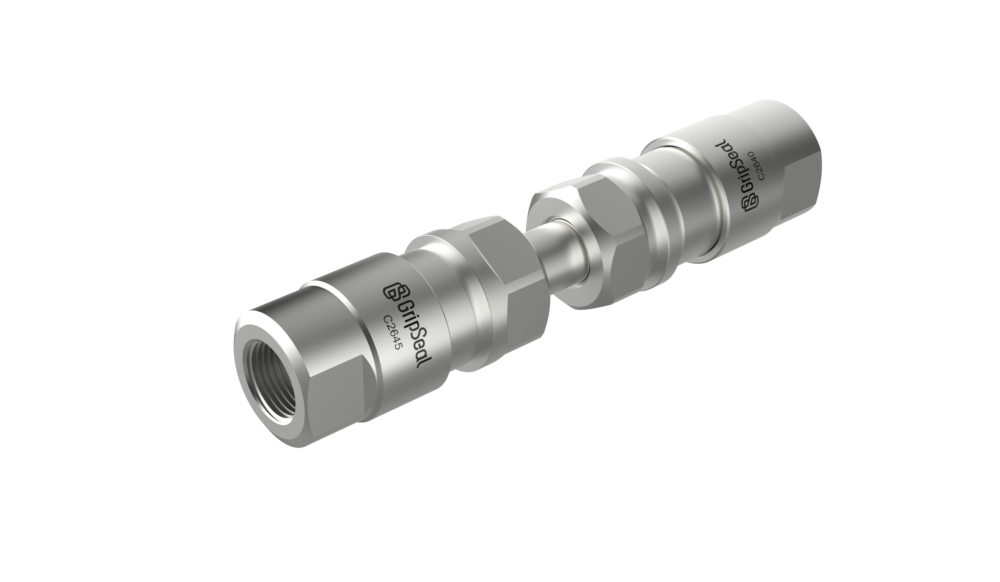
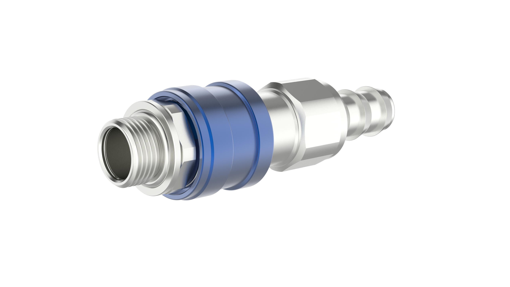
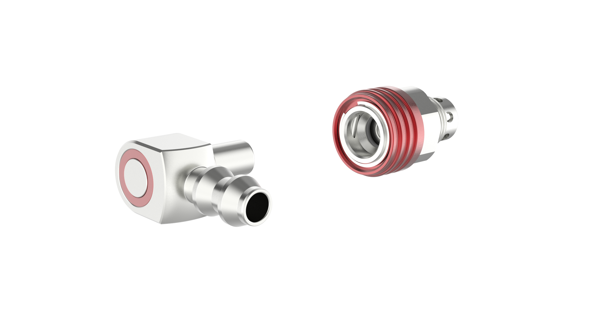
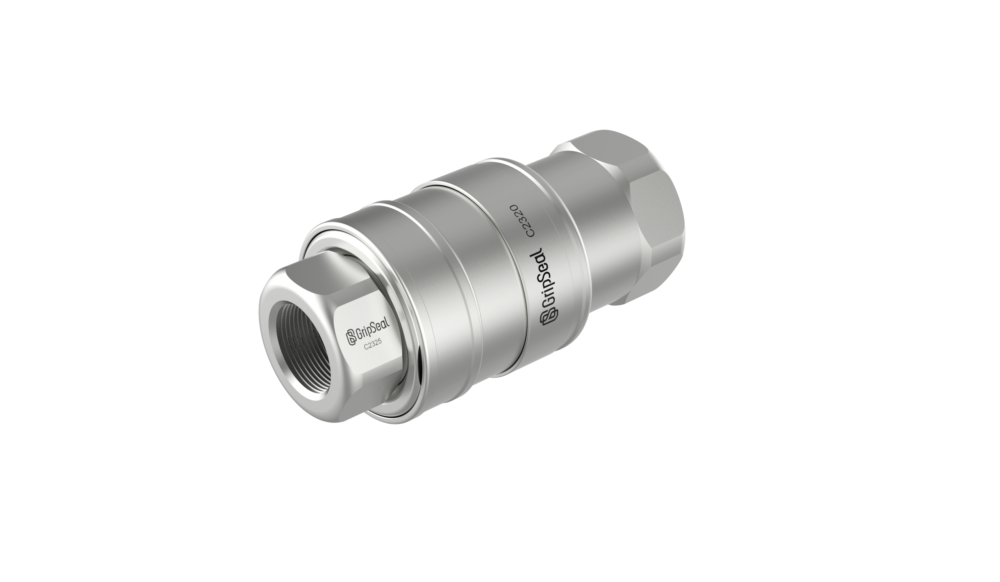
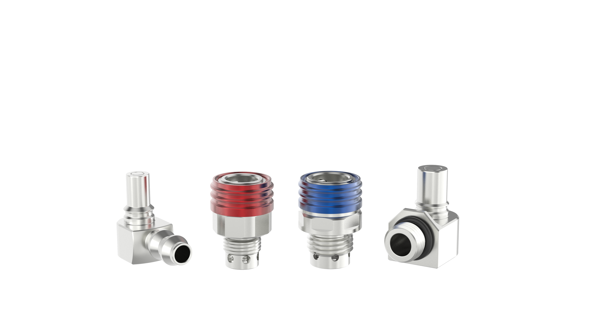
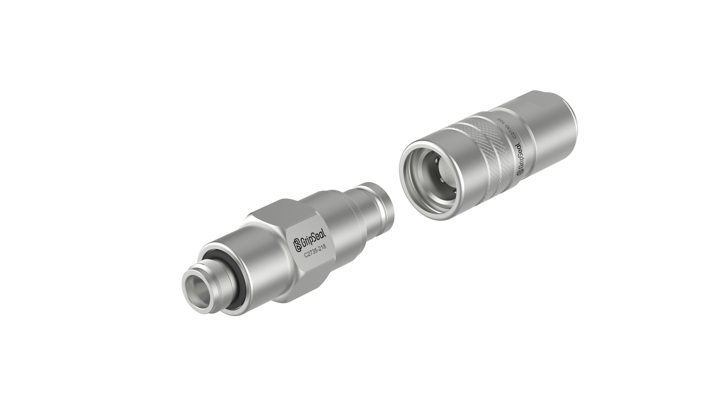

C 系列涵盖自动与手动公母快换接头，覆盖 C20 / C21 / C22 / C23 / C26 / C27 六大系列，工作压力从 50 bar 到 550 bar，通径 3–38 mm，全不锈钢或铝合金结构，无滴漏设计，支持托盘自动化对接与液冷 / 液压手动插拔。同一回路的插座与插头需成对配对。
以下参数与型号均取自 C 系列公母头产品目录。尾端螺纹、流量孔与配对方式以实际选型确认为准。

专为托盘自动化生产过程中的气液自动对接设计，全不锈钢结构，高插拔寿命（典型 10 万次插拔），插拔过程无滴漏，可适配 15 mm 或 30 mm 对接板厚度。
| 型号 | 类型 | 流量孔 | 尾部螺纹 |
|---|---|---|---|
| C2010 / C2015 | 母头 / 公头 | 3 mm | G1/8 |
| C2020 / C2025 | 母头 / 公头 | 6 mm | G1/4 |
| C2030 / C2035 | 母头 / 公头 | 9.5 mm | G3/8 |
| C2040 / C2045 | 母头 / 公头 | 12 mm | G1/2 |
| C2060 / C2065 | 母头 / 公头 | 16 mm | G3/4 |
| C2080 / C2085 | 母头 / 公头 | 20 mm | G1 |
规格：自动对接 / 50 bar / 不锈钢；尾部内螺纹，O 型圈密封，锁紧卡簧固定。

面向液冷、服务器水冷等场合的快速插拔公母头，无滴漏设计，全不锈钢、高流量，单手即可插拔，多尺寸与尾端型式可选定制。
| 型号 | 类型 | 流量孔 | 尾端螺纹 |
|---|---|---|---|
| C21B-01 | 手动母头 | 3 mm | G1/8（内/外螺纹可选） |
| C21B-02 | 手动母头 | 6 mm | G1/8（内/外螺纹可选） |
| C21B-03 | 手动母头 | 8 mm | G1/8（内/外螺纹可选） |
| C21B-04 | 手动母头 | 10 mm | G1/4（内/外螺纹可选） |
| C21B-05 | 手动母头 | 12 mm | G1/4（内/外螺纹可选） |
规格：手动插拔 / 不锈钢；尾端螺纹 G1/8、G1/4、G3/8，内螺纹或外螺纹可选。公头为 C21-xx 配对。

面向大流量、高流速场合的手动公头，无滴漏、端面密封，铝合金本体带颜色标识，平口锁紧结构安全可靠、防脱。
| 型号 | 类型 | 流量孔 | 尾端螺纹 |
|---|---|---|---|
| C22.03-08 | 手动公头 | 5.5 mm | G1/4 内螺纹 |
| C22.04-08 | 手动公头 | 5.5 mm | G1/4 内螺纹 |
| C22.06-08 | 手动公头 | 8 mm | G1/4 内螺纹 |
| C22.08-08 | 手动公头 | 8 mm | G1/4 内螺纹 |
| C22.10-08 | 手动公头 | 8 mm | G1/4 内螺纹 |
| C22.03-12 | 手动公头 | 5.5 mm | G1/2 内螺纹 |
| C22.04-12 | 手动公头 | 5.5 mm | G1/2 内螺纹 |
| C22.06-12 | 手动公头 | 8 mm | G1/2 内螺纹 |
| C22.08-12 | 手动公头 | 8 mm | G1/2 内螺纹 |
| C22.10-12 | 手动公头 | 8 mm | G1/2 内螺纹 |
规格：手动快接，03 / 04 / 06 / 08 / 10 配对口径；铝合金主体，红色标识环。

专为液压等高压场合设计的手动公母头，无滴漏，全不锈钢结构耐腐蚀，结构紧凑、单手插拔，适合狭小空间。
| 型号 | 类型 | 流量孔 | 尾端螺纹 |
|---|---|---|---|
| C23 | 手动公母头 | 6 mm | G1/8 |
| C23S | 手动公母头 | 6 mm | G1/4 |
| C23B | 手动公母头 | 6 mm | G3/8 |
| C23A | 手动公母头 | 10.4 mm | G3/4 |
| C23S | 手动公母头 | 12.5 mm | G1/2 |
| C23D | 手动公母头 | 15 mm | G3/4 |
| C23S | 手动公母头 | 20 mm | G1 |
| C23S | 手动公母头 | 25 mm | G1 1/4 |
规格：手动插拔，G1/8 – G1 1/4；316 不锈钢主体与锁套。

面向托盘自动化气动对接的公母头，全不锈钢结构，高插拔寿命（典型 10 万次），插拔无滴漏，螺纹连接安全可靠。
| 型号 | 类型 | 流量孔 | 尾端螺纹 |
|---|---|---|---|
| C26.00 | 自动公头 | 4 mm | G1/4 |
| C26.01 | 自动公头 | 8 mm | G1/4 |
| C26.03 | 自动公头 | 8 mm | G1/4 |
| C26.04 | 自动公头 | 12.5 mm | G1/4 |
| C26.05 | 自动公头 | 15 mm | G1/2 |
| C26.06 | 自动公头 | 25 mm | G1/2 |
| C26.08 | 自动公头 | 25 mm | G1 |
| C26.09 | 自动公头 | 38 mm | G1 |
规格：连接螺纹 G1/4 – G1，不锈钢；支持不同屏蔽罩安装板。

面向托盘自动化气液自动对接的公母头，全不锈钢、高流量导流设计（流量孔径可达 6.5 mm），测试压力最高 50 bar，螺纹固定安全可靠。
| 型号 | 类型 | 流量孔 | 尾端螺纹 |
|---|---|---|---|
| C27G1 | 自动公母头 | 6 mm | G1/4 |
| C27G2 | 自动公母头 | 6 mm | G1/4 |
| C27G3 | 自动公母头 | 8 mm | G3/8 |
| C27G4 | 自动公母头 | 8 mm | G3/8 |
| C27G5 | 自动公母头 | 12 mm | G1/2 |
| C27G6 | 自动公母头 | 12 mm | G1/2 |
| C27H1 | 自动公母头 | 6 mm | G1/4 |
| C27H2 | 自动公母头 | 6 mm | G1/4 |
| C27H3 | 自动公母头 | 8 mm | G3/8 |
| C27H4 | 自动公母头 | 8 mm | G3/8 |
| C27H5 | 自动公母头 | 12 mm | G1/2 |
| C27H6 | 自动公母头 | 12 mm | G1/2 |
规格：半径流量 50 bar；G / H 为不同安装结构变体，尾端螺纹 G1/4 – G1/2。
确认以下三点，即可锁定 C 系列对应的插座与插头型号。
提供插座与插头两端的尾端接口形式、螺纹或管口规格，以及现有管路图纸或照片。
说明介质类型、工作压力与所需通径，以及是否需要盲插（自动化对接）或大流量结构。
C 系列覆盖自动对接与手动插拔：自动化产线选 C20 / C26 / C27，现场手动选 C21 / C22 / C23；按压力 50–550 bar 与通径 3–38 mm 锁定型号。